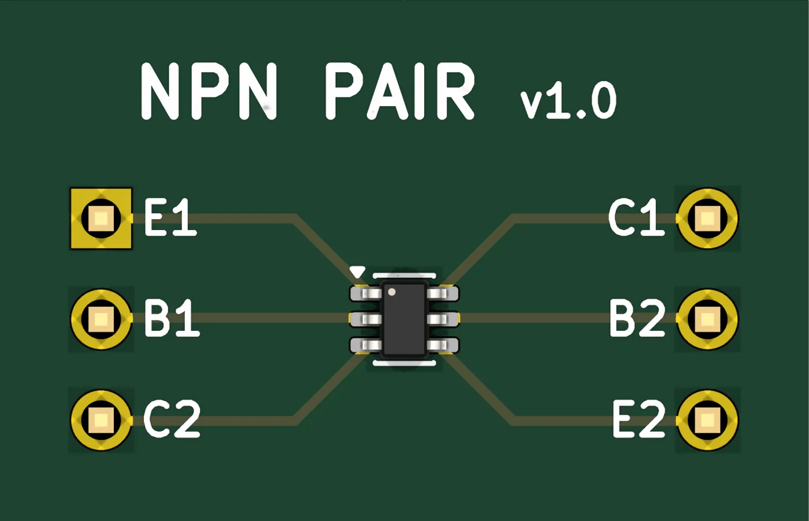
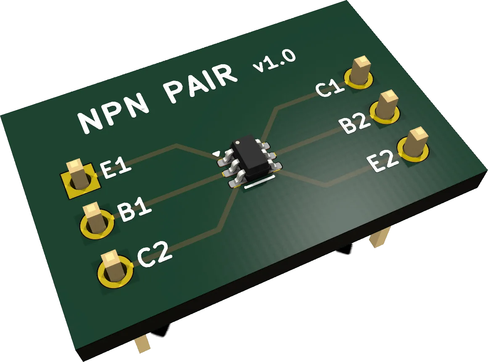
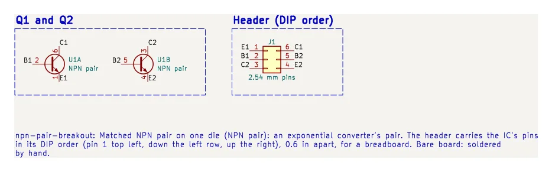

Matched NPN pair breakout
Two matched NPN transistors on one die, on a six-pin header for the breadboard: the pair an exponential converter needs.
Two NPN transistors on one die, matched to each other: the pair at the heart of an exponential converter, which turns 1 V per octave into a current that doubles with each volt. My VCO and VCF use one. Because both transistors share a die they stay at the same temperature, which is what keeps a converter's tracking steady.
The part is tiny, so the breakout puts it on a board 0.8 in wide with its six pins on two rows of 2.54 mm header 0.6 in apart, in the part's own order. It straddles a breadboard and each pin is named beside its pad. Bare: I solder the part by hand. Not built yet.
- Status
- In the first test order, being placed
- Version
- v1.0 (2026-10-26)
- Board
- 20.32 × 13.12 mm, 2 layers
- First order
- 5 on a snap-apart panel with the other IC breakouts, bare
- Progress
- follow its tracking issue


What it does
- Two NPN transistors on one die, matched: base-emitter voltage within 2 mV, current gain within 10 %.
- 45 V and 100 mA per transistor.
- 2 × 3 pins on a 2.54 mm pitch, rows 15.24 mm (0.6 in) apart.
- No decoupling on the board: the part has no supply pin.
- 20.32 × 13.12 mm, 0.8 in wide.
Pins
| E1 | C1 |
| B1 | B2 |
| C2 | E2 |
Wiring and setup
- The header goes underneath, long pins down, soldered from the front.
- The pins follow the part: E1, B1 and C2 down the left row, E2, B2 and C1 up the right. Collector 2 sits with transistor 1's emitter and base.
- As an exponential converter: both emitters together onto a current sink, a reference current into one collector, the CV into the other's base.
- Keep the board away from warm parts.
Limits and open questions
- Not built yet.
- A very small six-pin package: hot air or a fine iron.
Development notes
- It comes on the snap-apart chip panel, bare.
Schematic
The schematic as drawn, with each chip named by its function rather than its part number. The design isn't open source yet, so there are no files to download.


Would you use a NPN PAIR? A thumbs-up on its tracking issue is how I count interest, and you can subscribe there to follow its bring-up. Questions and ideas go to the discussions.